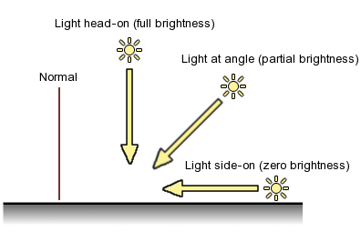

Anatomy of a Mesh
A mesh consists of triangles arranged in 3D space to create the impression of a solid object. A triangle is defined by its three corner points or vertices. In the Mesh class, the vertices are all stored in a single array and each triangle is specified using three integers that correspond to indices of the vertex array. The triangles are also collected together into a single array of integers; the integers are taken in groups of three from the start of this array, so elements 0, 1 and 2 define the first triangle, 3, 4 and 5 define the second, and so on. Any given vertex can be reused in as many triangles as desired but there are reasons why you may not want to do this, as explained below.
Lighting and Normals
The triangles are enough to define the basic shape of the object but extra information is needed to display the mesh in most cases. To allow the object to be shaded correctly for lighting, a normal vector must be supplied for each vertex. A normal is a vector that points outward, perpendicular to the mesh surface at the position of the vertex it is associated with. During the shading calculation, each vertex normal is compared with the direction of the incoming light, which is also a vector. If the two vectors are perfectly aligned, then the surface is receiving light head-on at that point and the full brightness of the light will be used for shading. A light coming exactly side-on to the normal vector will give no illumination to the surface at that position. Typically, the light will arrive at an angle to the normal and so the shading will be somewhere in between full brightness and complete darkness, depending on the angle.

Since the mesh is made up of triangles, it may seem that the normals at corners will simply be perpendicular to the plane of their triangle. However, normals are actually interpolated across the triangle to give the surface direction of the intermediate positions between the corners. If all three normals are pointing in the same direction then the triangle will be uniformly lit all over. The effect of having separate triangles uniformly shaded is that the edges will be very crisp and distinct. This is exactly what is required for a model of a cube or other sharp-edged solid but the interpolation of the normals can be used to create smooth shading to approximate a curved surface.
To get crisp edges, it is necessary to double up vertices at each edge since both of the two adjacent triangles will need their own separate normals. For curved surfaces, vertices will usually be shared along edges but a bit of intuition is often required to determine the best direction for the shared normals. A normal might simply be the average of the normals of the planes of the surrounding triangles. However, for an object like a sphere, the normals should just be pointing directly outward from the sphere's centre.
By calling Mesh.RecalculateNormals, you can get Unity to work out the normals' directions for you by making some assumptions about the "meaning" of the mesh geometry; it assumes that vertices shared between triangles indicate a smooth surface while doubled-up vertices indicate a crisp edge. While this is not a bad approximation in most cases, RecalculateNormals will be tripped up by some texturing situations where vertices must be doubled even though the surface is smooth.
Texturing
In addition to the lighting, a model will also typically make use of texturing to create fine detail on its surface. A texture is a bit like an image printed on a stretchable sheet of rubber. For each mesh triangle, a triangular area of the texture image is defined and that texture triangle is stretched and "pinned" to fit the mesh triangle. To make this work, each vertex needs to store the coordinates of the image position that will be pinned to it. These coordinates are two dimensional and scaled to the 0..1 range (0 means the bottom/left of the image and 1 means the right/top). To avoid confusing these coordinates with the Cartesian coordinates of the 3D world, they are referred to as U and V rather than the more familiar X and Y, and so they are commonly called UV coordinates.
Like normals, texture coordinates are unique to each vertex and so there are situations where you need to double up vertices purely to get different UV values across an edge. An obvious example is where two adjacent triangles use discontinuous parts of the texture image (eyes on a face texture, say). Also, most objects that are fully enclosed volumes will need a "seam" where an area of texture wraps around and joins together. The UV values at one side of the seam will be different from those at the other side.
See Also
- Using the Mesh Class page.
- Mesh scripting class reference.